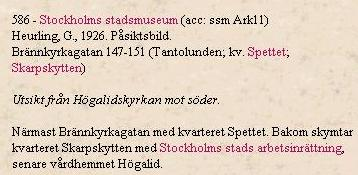

Södermalm i tid och rum. Stockholm
|
 Ur Stockholmsliv, Staffan Tjerneld, 1950 Mellan arbetarbostäderna vid Yttersta Tvärgatan och Manhemsfastigheterna vid Horns- och Brännkyrkagatorna ligger endast ett fyrtiotal år. Under de fyra decennierna skedde industrialismens genombrott, och allt mer tätnande arbetarskaror pockade på att få frågan om hyggliga smålägenheter med billiga hyror löst. En icke oväsentlig insats gjordes av Byggnadsaktiebolaget Manhem, grundat av direktör Torsten Alm 1894. Detta år började bolaget bygga fastigheterna Brännkyrkagatan 84-88, Ringvägen 2-6 och Lundagatan 23-29. Utbyggnaden fortsatte också längs Hornsgatan, så att bolaget 1907 förfogade över tjugotre hyreshus, i regel fem våningar höga, med över 414 lägenheter och 376 kök. Det sammanlagda antalet hyresgäster beräknades då till bortåt tretusen personer. |
Manhemsfastigheterna hade gott rykte. Dels var hyrorna billiga, dels, och framför allt, var
lägenheterna ljusa och stora. Ett rum och kök sades motsvara en ordinär tvårummare i en vanlig
arbetarkasern. De hade rymliga tamburer och garderober, vattenledning indragen i köket samt,
åtminstone i de senare uppförda fastigheterna, torvströklosetter i lägenheterna. Bolaget byggde också en bad- och tvättinrättning med delvis maskinell utrustning, som tillhandahölls mot särskild avgift, och poliklinik, där hyresgästerna erhöll kostnadsfri behandling. Där fanns också folkkök, och för den andliga välfärden Folkbildningsförbundets bibliotek och KFUM-lokaler med särskild kyrksal
|